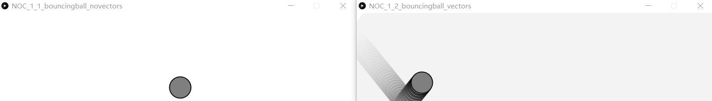
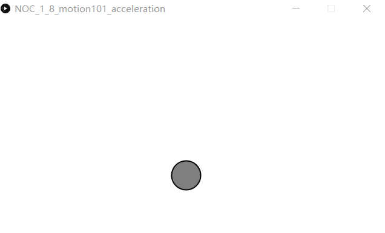
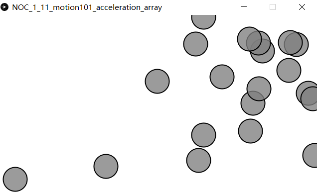

向量 概念 向量又叫矢量，既有大小又有方向的量就叫做向量
processing中的向量是PVector
向量和标量的对比 对比一下向量和标量的区别:
下面是使用标量的代码：
1 2 3 4 5 6 7 8 9 10 11 12 13 14 15 16 17 18 19 20 21 22 23 24 25 26 27 28 29 30 31 32 float x = 100 ;float y = 100 ;float xspeed = 2.5 ;float yspeed = 2 ;void setup () size(800 , 200 ); smooth(); } void draw () background(255 ); x = x + xspeed; y = y + yspeed; if ((x > width) || (x < 0 )) { xspeed = xspeed * -1 ; } if ((y > height) || (y < 0 )) { yspeed = yspeed * -1 ; } stroke(0 ); strokeWeight(2 ); fill(127 ); ellipse(x, y, 48 , 48 ); }
下面是使用向量的代码：
1 2 3 4 5 6 7 8 9 10 11 12 13 14 15 16 17 18 19 20 21 22 23 24 25 26 27 28 29 30 31 32 33 PVector position; PVector velocity; void setup () size (800 ,200 ); background (255 ); position = new PVector (100 ,100 ); velocity = new PVector (2 ,2.5 ); } void draw () noStroke (); fill (255 ,10 ); rect (0 ,0 ,width,height); position.add (velocity); if ((position.x > width) || (position.x < 0 )) { velocity.x = velocity.x * -1 ; } if ((position.y > height) || (position.y < 0 )) { velocity.y = velocity.y * -1 ; } stroke (0 ); strokeWeight (2 ); fill (127 ); ellipse (position.x,position.y,48 ,48 ); }
为了便于对比，我把这两段代码运行的结果放在一起比较，结果如下，左边是标量，右边是向量

标量的每一帧都是不连续的，而向量的每一帧都是连续的所以会有残影，残影把整个界面都铺满了
向量的运算 向量的减法 在processing中向量的减法是sub()方法
1 2 3 4 5 6 7 8 9 10 11 12 13 14 15 16 void setup () size(640 , 360 ); } void draw () background(255 ); PVector mouse = new PVector(mouseX, mouseY); PVector center = new PVector(width/2 , height/2 ); mouse.sub(center); translate(width/2 , height/2 ); strokeWeight(2 ); stroke(0 ); line(0 , 0 , mouse.x, mouse.y); }
向量乘法 在processing中向量的减法是mult()方法
1 2 3 4 5 6 7 8 9 10 11 12 13 14 15 16 17 18 19 void setup () size(640 ,360 ); smooth(); } void draw () background(255 ); PVector mouse = new PVector(mouseX,mouseY); PVector center = new PVector(width/2 ,height/2 ); mouse.sub(center); mouse.mult(0.5 ); translate(width/2 ,height/2 ); strokeWeight(2 ); stroke(0 ); line(0 ,0 ,mouse.x,mouse.y); }
向量的模(向量的大小) 在processing中向量的取模是mag()方法
1 2 3 4 5 6 7 8 9 10 11 12 13 14 15 16 17 18 19 20 21 22 void setup () size(640 ,360 ); } void draw () background(255 ); PVector mouse = new PVector(mouseX,mouseY); PVector center = new PVector(width/2 ,height/2 ); mouse.sub(center); float m = mouse.mag(); fill(0 ); noStroke(); rect(0 ,0 ,m,10 ); translate(width/2 ,height/2 ); stroke(0 ); strokeWeight(2 ); line(0 ,0 ,mouse.x,mouse.y); }
加速度 这里用到一个另外一个对象，关于怎么在PDE中创建多个类其实很简单，PDE的sketch可以新建多个标签页，但是只有第一个标签页可以有setup()，draw()这些方法，这每一个标签都可以是一个类或者一个包含内部类的类，而这些其他标签都可以作为第一个标签的成员变量来使用的。
1 2 3 4 5 6 7 8 9 10 11 12 13 14 Mover mover; void setup () size(640 ,360 ); mover = new Mover(); } void draw () background(255 ); mover.update(); mover.checkEdges(); mover.display(); }
1 2 3 4 5 6 7 8 9 10 11 12 13 14 15 16 17 18 19 20 21 22 23 24 25 26 27 28 29 30 31 32 33 34 35 36 37 38 39 40 41 42 43 44 class Mover PVector position; PVector velocity; PVector acceleration; float topspeed; Mover() { position = new PVector(width/2 , height/2 ); velocity = new PVector(0 , 0 ); acceleration = new PVector(-0.001 , 0.01 ); topspeed = 10 ; } void update () velocity.add(acceleration); velocity.limit(topspeed); position.add(velocity); } void display () stroke(0 ); strokeWeight(2 ); fill(127 ); ellipse(position.x, position.y, 48 , 48 ); } void checkEdges () if (position.x > width) { position.x = 0 ; } else if (position.x < 0 ) { position.x = width; } if (position.y > height) { position.y = 0 ; } else if (position.y < 0 ) { position.y = height; } } }
由于加速度的存在球的下降速度越来越快

由于限制了最大的速度，所以最后的下降速度基本保持不变
多对象的向量加速度 其实这个在前面用到过，在我们绘制钢琴的block的时候，只不过现在做了拓展
1 2 3 4 5 6 7 8 9 10 11 12 13 14 15 16 17 18 Mover[] movers = new Mover[20 ]; void setup () size (640 ,360 ); for (int i = 0 ; i < movers.length; i++) { movers[i] = new Mover (); } } void draw () background (255 ); for (int i = 0 ; i < movers.length; i++) { movers[i].update (); movers[i].display (); } }
1 2 3 4 5 6 7 8 9 10 11 12 13 14 15 16 17 18 19 20 21 22 23 24 25 26 27 28 29 30 31 32 33 34 35 36 37 38 39 40 41 42 class Mover { PVector position; PVector velocity; PVector acceleration; float topspeed; Mover() { position = new PVector (random (width ),random (height )); velocity = new PVector (0 ,0 ); topspeed = 5 ; } void update() { PVector mouse = new PVector (mouseX ,mouseY ); acceleration = PVector .sub(mouse,position); acceleration.normalize(); acceleration.mult(0.2 ); velocity.add (acceleration); velocity.limit(topspeed); position.add (velocity); } void display() { stroke (0 ); strokeWeight (2 ); fill (127 ,200 ); ellipse (position.x,position.y,48 ,48 ); } }
运行结果如下，类似于粒子系统

关于向量的运用基本讲完了。